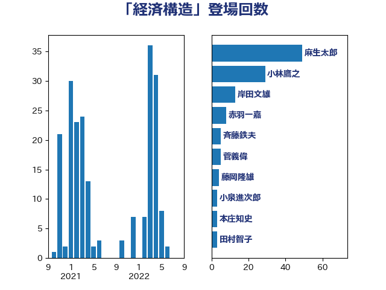

単語「経済構造」

| 麻生太郎 | 自由民主党 | 49 回 |
| 小林鷹之 | 自由民主党 | 29 回 |
| 岸田文雄 | 自由民主党 | 13 回 |
| 赤羽一嘉 | 公明党 | 8 回 |
| 斉藤鉄夫 | 公明党 | 5 回 |
| 菅義偉 | 自由民主党 | 5 回 |
| 藤岡隆雄 | 立憲民主党 | 4 回 |
| 小泉進次郎 | 自由民主党 | 3 回 |
| 本庄知史 | 立憲民主党 | 3 回 |
| 田村智子 | 日本共産党 | 3 回 |
| 萩生田光一 | 自由民主党 | 3 回 |
| 西村康稔 | 自由民主党 | 3 回 |
| 伊藤渉 | 公明党 | 2 回 |
| 平井卓也 | 自由民主党 | 2 回 |
| 杉久武 | 公明党 | 2 回 |
| 林芳正 | 自由民主党 | 2 回 |
| 梶山弘志 | 自由民主党 | 2 回 |
| 河西宏一 | 公明党 | 2 回 |
| 浜口誠 | 国民民主党 | 2 回 |
| 石井啓一 | 公明党 | 2 回 |
| 礒崎哲史 | 国民民主党 | 2 回 |
| 穂坂泰 | 自由民主党 | 2 回 |
| 足立康史 | 日本維新の会 | 2 回 |
| 長友慎治 | 国民民主党 | 2 回 |
| こやり隆史 | 自由民主党 | 1 回 |
| 中川正春 | 立憲民主党 | 1 回 |
| 伊佐進一 | 公明党 | 1 回 |
| 伊藤孝江 | 公明党 | 1 回 |
| 佐藤信秋 | 自由民主党 | 1 回 |
| 佐藤英道 | 公明党 | 1 回 |
| 加藤勝信 | 自由民主党 | 1 回 |
| 和田義明 | 自由民主党 | 1 回 |
| 國重徹 | 公明党 | 1 回 |
| 堀場幸子 | 日本維新の会 | 1 回 |
| 塩谷立 | 自由民主党 | 1 回 |
| 小沼巧 | 立憲民主党 | 1 回 |
| 山谷えり子 | 自由民主党 | 1 回 |
| 平木大作 | 公明党 | 1 回 |
| 後藤茂之 | 自由民主党 | 1 回 |
| 枝野幸男 | 立憲民主党 | 1 回 |
| 森山浩行 | 立憲民主党 | 1 回 |
| 浅野哲 | 国民民主党 | 1 回 |
| 浜地雅一 | 公明党 | 1 回 |
| 滝波宏文 | 自由民主党 | 1 回 |
| 熊谷裕人 | 立憲民主党 | 1 回 |
| 田村貴昭 | 日本共産党 | 1 回 |
| 石川香織 | 立憲民主党 | 1 回 |
| 秋野公造 | 公明党 | 1 回 |
| 舩後靖彦 | れいわ新選組 | 1 回 |
| 藤田文武 | 日本維新の会 | 1 回 |
| 越智隆雄 | 自由民主党 | 1 回 |
| 逢坂誠二 | 立憲民主党 | 1 回 |
| 進藤金日子 | 自由民主党 | 1 回 |
| 鈴木俊一 | 自由民主党 | 1 回 |
| 青山繁晴 | 自由民主党 | 1 回 |
| 青木一彦 | 自由民主党 | 1 回 |
| 音喜多駿 | 日本維新の会 | 1 回 |